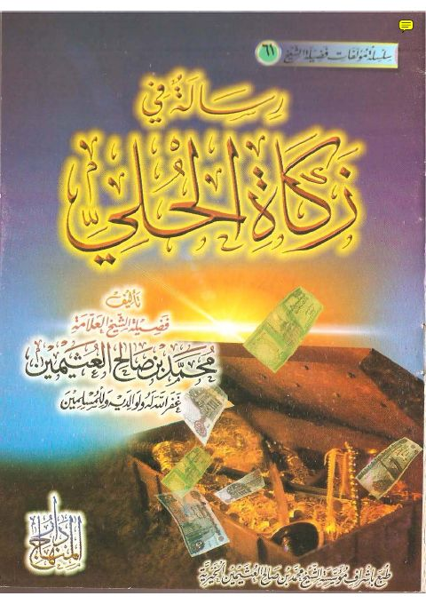
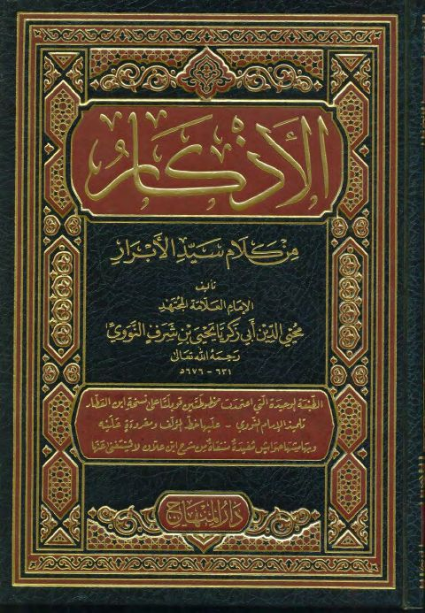
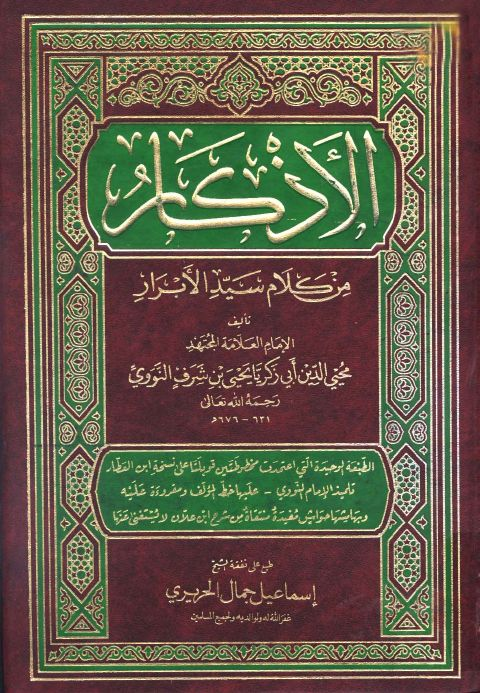
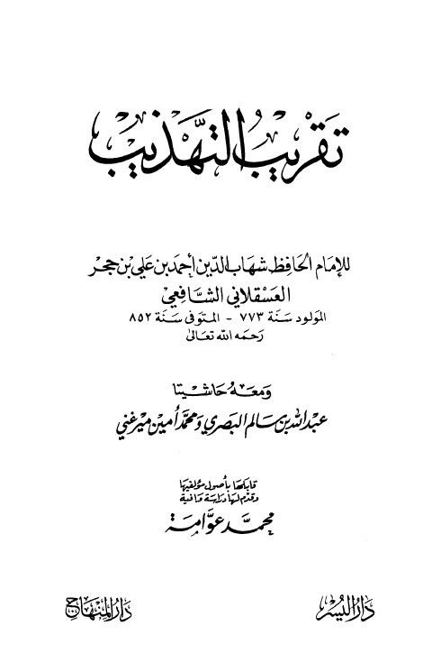
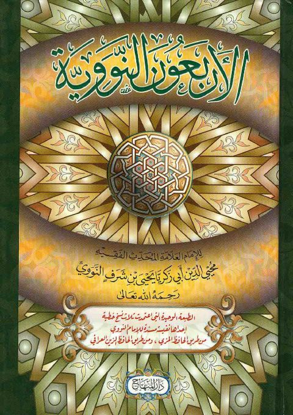
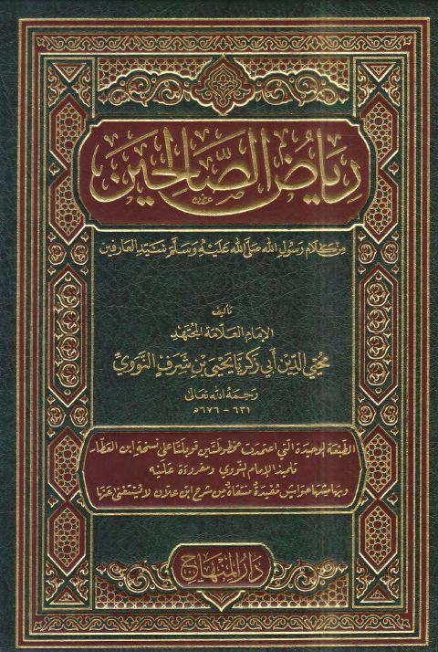

دار المنهاج
Publisher
Resources

رسالة في زكاة الحلي- دار المنهاج رسالة في زكاة الحلي- دار المنهاج محمد بن صالح العثيمين
الأذكار من كلام سيد الأبرار- ت الطير الأذكار من كلام سيد الأبرار- ت الطير يحيى بن شرف النووي
الأذكار من كلام سيد الأبرار- ط المنهاج الأذكار من كلام سيد الأبرار- ط المنهاج يحيى بن شرف النووي التبيان في آداب حملة القرآن- ت عربش
التبيان في آداب حملة القرآن- ت عربش
يحيى بن شرف النووي
التبيان في آداب حملة القرآن- ت عربش
التبيان في آداب حملة القرآن- ت عربش
يحيى بن شرف النووي

تقريب التهذيب ومعه حاشيتا البصري ومحمد أمين ميرغني- ط. المنهاج تقريب التهذيب ومعه حاشيتا البصري ومحمد أمين ميرغني- ط. المنهاج أحمد بن علي بن حجر العسقلاني
الأربعون النووية الأربعون النووية يحيى بن شرف النووي صحيح الإمام مسلم المسند الصحيح المختصر من السنن بنقل العدل عن العدل عن رسول الله ﷺ
صحيح الإمام مسلم المسند الصحيح المختصر من السنن بنقل العدل عن العدل عن رسول الله ﷺ
مسلم بن الحجاج بن مسلم القشيري النيسابوري
صحيح الإمام مسلم المسند الصحيح المختصر من السنن بنقل العدل عن العدل عن رسول الله ﷺ
صحيح الإمام مسلم المسند الصحيح المختصر من السنن بنقل العدل عن العدل عن رسول الله ﷺ
مسلم بن الحجاج بن مسلم القشيري النيسابوري

رياض الصالحين من كلام رسول الله ﷺ سيد العارفين- مدمجة رياض الصالحين من كلام رسول الله ﷺ سيد العارفين- مدمجة محيي الدين يحيى بن شرف النووي